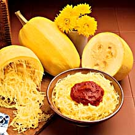

Spaghetti squash contains many nutrients, including folic acid, potassium, vitamin A, and beta carotene. It is low in calories, averaging 42 calories per 1-cup (155 grams) serving.
Spaghetti squash or vegetable spaghetti is a group of cultivars of Cucurbita pepo subsp. pepo. They are available in a variety of shapes, sizes, and colours, including ivory, yellow and orange, with orange having the highest amount of carotene. Its center contains many large seeds. When raw, the flesh is solid and similar to other raw squash. When cooked, the meat of the fruit falls away from the flesh in ribbons or strands that look like, and can be used as an alternative to, spaghetti.